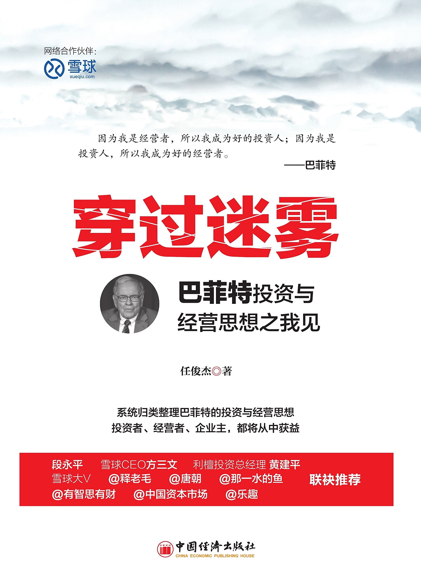

 |
穿过迷雾：巴菲特投资与经营思想之我见
任俊杰
|
序
前言
第一章 买什么
第一节 四把尺
第二节 能力圈
第三节 后视镜
第四节 100：1
第五节 砂糖
第六节 市场特许经营权
第七节 船与船长
第八节 护城河
第九节 小投入 大产出
第十节 股东利润
第十一节 踮脚
第十二节 EJA
第十三节 船长
第十四节 六道门槛儿
第十五节 非理性并购
第十六节 用结果说话
第十七节 插满蜡烛的蛋糕
第十八节 大赢家
第十九节 基石
第二十节 打棒球
第二十一节 财务2+2
第二十二节 下滑的电梯
第二十三节 横杆
第二十四节 我们买了些报纸
第二十五节 银行业
第二十六节 20年的糖果店
第二十七节 GEICO
第二十八节 公用事业
第二章 怎么买
第一节 长期投资
第二节 集中持股
第三节 逆向而动
第四节 笨钱不笨
第五节 市场先生
第六节 特别协议
第七节 卖出
第三章 多面手
第一节 固定收益证券
第二节 可转换优先股
第三节 非常规性投资
第四节 套利
第五节 玩转衍生品
第四章 聊市场
第一节 视而不见
第二节 音乐厅
第三节 两元换一元
第四节 5分钟
第五节 酒吧间的喧哗（上）
第六节 酒吧间的喧哗（下）
第七节 合法丑闻
第八节 Rainmaking
第九节 旅鼠
第十节 投票机与称重器
第十一节 平庸的回报
第十二节 宴会打嗝
第十三节 独立董事
第十四节 橡皮图章
第十五节 所有者资本主义
第十六节 资本利得税
第十七节 价值投资
第十八节 白天与黑夜
第十九节 股票回购：其他公司
第二十节 华尔街好人
第二十一节 风雨过后是彩虹
第五章 说公司
第一节 双性恋
第二节 透视盈余
第三节 特色餐厅
第四节 靶心
第五节 股票分割
第六节 三条线
第七节 烟蒂
第八节 非受迫性失误
第九节 别处没有的管理故事
第十节 市值管理
第十一节 夜夜安眠
第十二节 发动机
第十三节 世界总部
第十四节 600个伯克希尔
第十五节 B股
第十六节 股票回购
第十七节 股息
第十八节 克莱顿房产公司
第十九节 我们有所不为
第二十节 我们的优势
第二十一节 聪明钱
第二十二节 不离不弃
第六章 谈估值
第一节 厚钱包
第二节 账面价值与内在价值
第三节 内在价值评估